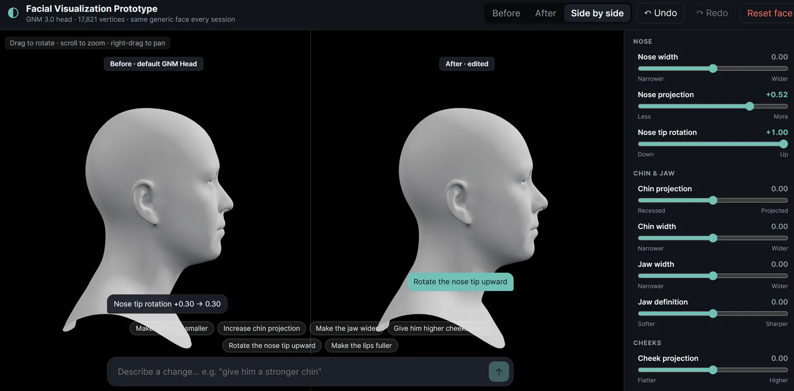

In progress
Plastic Surgery Planning
I am building an AI model that shows patients a before-and-after preview of their plastic surgery. They can describe a change in plain language, like “rotate the nose tip upward,” or make it by hand with sliders for the nose, chin, jaw, cheeks, and lips.
